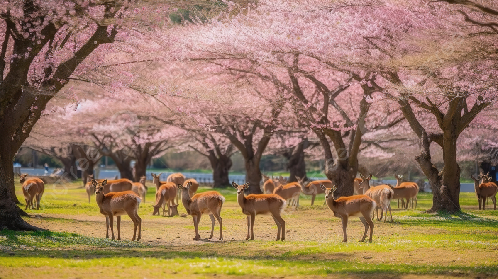

NARA
Nara, implantée dans les terres du Kansai, fut la première capitale impériale du Japon. Très riche historiquement et culturellement, la petite Nara, célèbre pour ses cerfs et son Todai-ji, abrite ainsi de nombreux trésors qu'il serait dommage de rater lors d'un séjour au Japon. Au flanc d'une vallée en pente douce, dans la plaine du Yamato, s'est épanoui le berceau des arts et des lettres. Nara possède le charme d'une provinciale nonchalante. Foyer du bouddhisme, promu au milieu du VIème siècle religion d'État de l'archipel, la capitale des temps anciens, malgré les incendies et les aléas de l'Histoire, conserve des trésors. L'antique siège impérial fascine toujours autant. Pour apprécier encore plus Nara, ilfaut aussi arpenter les quartiers populaires, à l'exemple du quartier de Naramachi aux vieilles maisons préservées logeant boutiques et restaurants, s'égarerdans un labyrinthe de ruelles, découvrir presque par hasard un sanctuaire… et jouir de l'instant
NARA NATIONAL MUSEUM
Le musée national de Nara se concentre sur la préservation du patrimoine religieux du bouddhisme japonais. Si vous souhaitez comprendre comment le bouddhisme s'est établi à Nara , le musée propose des présentations et des guides sur les principaux événements qui ont façonné cette religion. Le bâtiment lui-même est également une merveille architecturale. Le bâtiment d'origine, conçu par Katayama Tokuma, est tout autant une œuvre d'art que les objets qu'il renferme. Célèbre pour avoir introduit les influences artistiques françaises et occidentales dans l'architecture japonaise, son style unique a fait de ce bâtiment un bien culturel important. À l'intérieur se trouvent des objets d'art anciens et des artefacts historiques qui témoignent du développement et de la pratique du bouddhisme au Japon.


les cerfs de Nara
Les cerfs de Nara sont des créatures majestueuses qui errent librement dans les vastes parcs et sanctuaires de la ville. Ils sont considérés comme des messagers divins et sont intimement liés à l'histoire et à la culture de Nara. Ces cerfs, également appelés sika, sont protégés et chéris par les habitants et les visiteurs. Ils se promènent gracieusement autour des temples anciens, ajoutant une touche de sérénité à l'atmosphère.